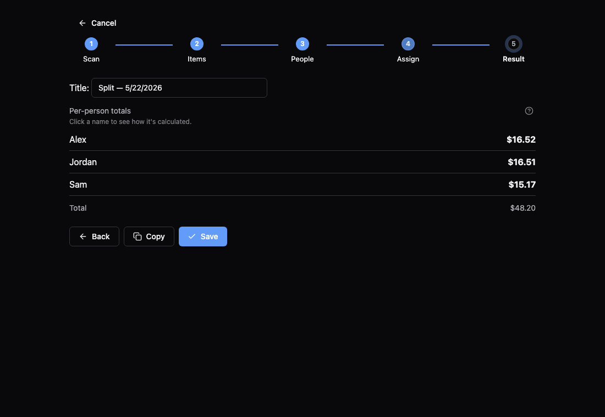

Split receipts fairly. Locally.
Snap a receipt, assign items to people, get an exact per-person total — without an account, a cloud, or a paywall.
curl -fsSL https://7174andy.github.io/scansplit/install.sh | shirm https://7174andy.github.io/scansplit/install.ps1 | iexmacOS / Linux installs into /Applications or ~/.local/bin. Windows opens the MSI installer.
What it does
Multi-receipt transactions
Combine several receipts into one shared bill — dinner + drinks tab, one split.
AI line-item extraction
Claude Sonnet 4.6 reads the photo and returns structured items, tax, tip, and discounts.
Per-person assignment
Toggle who had what. An empty assignment defaults to "everyone."
Exact fair-share math
Integer cents, largest-remainder allocation, proportional tax and tip. Totals always sum exactly.
Learns over time
Correct a cryptic SKU once ("ITEM 4823" → "Caesar Salad") and ScanSplit remembers it for that merchant.
Local-first
Data lives in a SQLite database on your machine. The only outbound call is the OCR request to Anthropic.

Direct downloads
Prefer to click instead? Pick your platform.
| Platform | File |
|---|---|
| macOS (Apple Silicon) | Latest release → |
| macOS (Intel) | Latest release → |
| Windows (MSI) | Latest release → |
| Windows (NSIS) | Latest release → |
| Linux (Debian/Ubuntu) | Latest release → |
| Linux (AppImage) | Latest release → |
Bundles are unsigned. macOS: right-click → Open the first time (or use the install script, which strips the quarantine flag for you). Windows: click More info → Run anyway when SmartScreen warns.